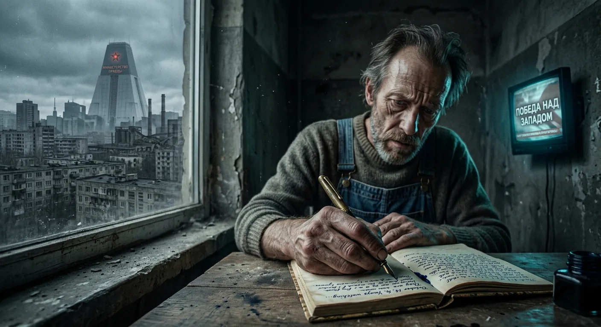
ONE
It was a bright cold day in April, and the clocks were striking thirteen. Winston Smith hurried through the glass doors of Victory Mansions, a gritty swirl of dust following him into the hallway that smelt of boiled cabbage and old rag mats. The lift was useless—the electric current cut off during daylight hours as part of the economy drive in preparation for Hate Week—and so Winston, thirty-nine years old with a varicose ulcer throbbing above his ankle, climbed seven flights past landing after landing where the enormous face of Big Brother gazed down from posters, the dark eyes following his every movement, the caption beneath declaring its ceaseless warning.
Inside his cramped flat, a telescreen babbled production figures from the wall—an instrument that could be dimmed but never silenced, that received and transmitted simultaneously, so that Winston existed always in the assumption that every sound he made was overheard, every gesture within range of that metal plaque scrutinized by the Thought Police. Through the window the world looked cold and colorless, the streets choked with dust and torn paper, the bombed-out ruins of nineteenth-century houses shored up with timber and cardboard. Only the posters provided color: Big Brother's black-mustachioed face plastered on every commanding corner, and in the distance the vast white pyramid of the Ministry of Truth soaring three hundred meters into the air, its three paradoxical slogans picked out in elegant lettering—WAR IS PEACE, FREEDOM IS SLAVERY, IGNORANCE IS STRENGTH.
Winston understood the architecture of oppression. Four colossal ministries divided the apparatus of government between them: Minitrue for propaganda, Minipax for war, Miniplenty for rationing scarcity, and Miniluv—windowless, fortified with barbed wire and machine-gun nests—for the maintenance of love through terror. He poured himself a teacup of Victory Gin, the colorless liquid burning like nitric acid, then retrieved from a drawer a peculiarly beautiful book with creamy paper and a marbled cover, purchased guiltily from a junk shop in violation of Party rules. What he was about to do was open a diary—not illegal, since nothing was illegal anymore, but punishable nonetheless by death or twenty-five years in a forced-labor camp.
In a shallow alcove hidden from the telescreen's sight, Winston dipped an archaic pen into ink and wrote the date: April 4th, 1984—though he could not be certain of the year, for nowadays it was impossible to pin down any date within a year or two. The words would not come at first, and then they poured out in panicked confession: a visit to the flicks, war films, refugees bombed in the Mediterranean, a child's arm spiraling into the air while the Party seats applauded. The memory triggered another—that morning's Two Minutes Hate, when Emmanuel Goldstein's face had flashed onto the telescreen and the entire Records Department had erupted into frenzy, screaming, kicking, frothing with manufactured rage that felt nonetheless horribly real. Winston had noticed two figures amid the crowd: a dark-haired girl from the Fiction Department whom he instinctively feared as a possible spy, and O'Brien, a burly Inner Party member whose fleeting glance seemed to communicate secret understanding, a momentary flash of solidarity that vanished as quickly as it appeared.
Afterward, sitting with the gin rising in his stomach, Winston discovered he had been writing unconsciously, the pen moving of its own volition across half a page: DOWN WITH BIG BROTHER, over and over in large neat capitals. It was absurd to panic—the act of opening the diary had already condemned him. Thoughtcrime could not be concealed forever. Sooner or later they were bound to get you, always at night, the rough hand shaking your shoulder, and then you were vaporized, your existence denied and forgotten.
He wrote once more in hurried scrawl—*theyll shoot me i dont care*—then laid down the pen, slightly ashamed of himself, when suddenly there came a knocking at the door.
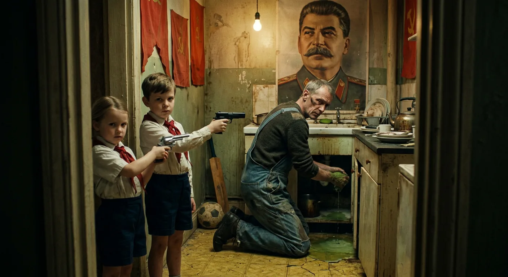
II
Winston stood frozen at his door, acutely aware that behind him the diary lay open on the table, its pages covered with the damning words DOWN WITH BIG BROTHER in letters nearly visible across the room. An inconceivably stupid thing to have done—yet even in his panic, he had not wanted to smudge the creamy paper by closing the book while the ink remained wet. He drew breath and opened the door.
Relief flooded through him. It was only Mrs. Parsons, a colorless, crushed-looking woman from the flat down the passage, her wispy hair framing a face so lined one had the impression dust had settled into its creases. She needed help with a blocked sink—her husband Tom was not home. Winston followed her through Victory Mansions, that crumbling relic from 1930 or thereabouts, where plaster flaked from walls, pipes burst in every frost, and repairs required sanction from remote committees that might delay even a window-pane mending for two years.
The Parsons flat presented a different species of dinginess: everything battered and trampled, as though visited by some large violent animal. Sports equipment littered the floor, dirty dishes crowded the table, and scarlet Youth League banners hung alongside a full-sized poster of Big Brother. The air carried the building's omnipresent boiled-cabbage smell, shot through with a sharper reek of sweat belonging to someone not present—Tom Parsons, that fattish man of paralyzing stupidity, a mass of imbecile enthusiasms upon whom the Party's stability depended more reliably than upon the Thought Police themselves.
Winston knelt to clear the pipe, extracting a clot of human hair from the filthy greenish water. He had barely returned to the living room when a savage voice yelled "Up with your hands!" The Parsons children—a tough-looking boy of nine and his younger sister, both in the blue shorts and red neckerchiefs of the Spies—menaced him with toy weapons, shrieking accusations of thought-crime and treason. There was calculating ferocity in the boy's eyes, a quite evident desire to strike. It was somehow slightly frightening, like the gamboling of tiger cubs that will soon grow into man-eaters.
Mrs. Parsons explained nervously that they were disappointed about missing the public hanging of Eurasian prisoners in the Park. As Winston took his leave, something struck the back of his neck with agonizing force—a catapult shot. The boy bellowed "Goldstein!" as Mrs. Parsons dragged him inside, her grayish face frozen in helpless fright.
Back in his flat, Winston reflected on the horror of it. That wretched woman lived in terror of her own children, and within a year or two they would be watching her night and day for symptoms of unorthodoxy. Through organizations like the Spies, children were systematically transformed into ungovernable savages whose ferocity was directed entirely outward—against foreigners, traitors, thought-criminals. Hardly a week passed without the Times celebrating some eavesdropping "child hero" who had denounced a parent to the Thought Police.
His thoughts drifted to O'Brien, to that dream from seven years ago: a pitch-dark room, a voice saying quietly, "We shall meet in the place where there is no darkness." He could not be certain whether O'Brien was friend or enemy, yet there existed between them a link of understanding more important than affection or partisanship.
The telescreen announced a glorious victory, then revealed that next week's chocolate ration would be reduced. Winston stood at the window watching the torn INGSOC poster flap in the wind, feeling utterly alone—the past dead, the future unimaginable, Big Brother's eyes pursuing him from coins and stamps and cigarette packets. Yet curiously, as the telescreen struck fourteen, something like resolve hardened within him. He returned to the diary and wrote his message to a future age when thought might be free, acknowledging that thoughtcrime did not merely entail death—thoughtcrime *was* death. He was already a dead man. Now it became important only to stay alive as long as possible, to scrub the telltale ink from his fingers, to place a single grain of dust upon the diary's cover so he might know if it had been disturbed.
The hour pressed forward, and Winston prepared to return to his work at the Ministry of Truth, carrying within him the weight of his impossible act and the fragile hope that somewhere, somehow, his words might outlast his annihilation.
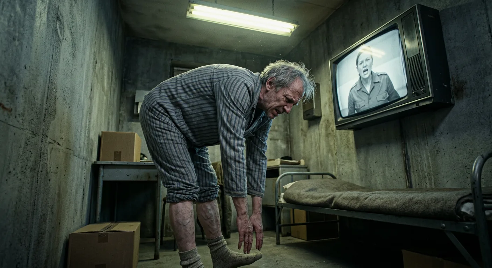
III
Winston dreamed of his mother.
She appeared to him as he remembered her from childhood—tall, statuesque, with magnificent fair hair and the slow movements of someone who had learned silence as a language. His father remained a vaguer figure: dark, thin, perpetually dressed in neat clothes with paper-thin soles on his shoes, spectacles perched on his face. Both had been swallowed up in the great purges of the Fifties, disappeared into that machinery of erasure that consumed so many and asked no forgiveness afterward.
In the dream, his mother sat far below him in some subterranean place—the bottom of a well, or a sinking ship's saloon—holding his infant sister in her arms. The two of them gazed upward through darkening green water, sinking ever downward while Winston remained in light and air. They were drowning *because* he lived. He knew this, and they knew it, and yet their faces held no reproach. Only acceptance of the unavoidable order of things.
What struck Winston upon reflection was not the imagery but the revelation it carried: his mother's death had possessed a quality of tragedy that no longer existed in the world. Tragedy required privacy, love, loyalty—concepts belonging to an ancient time when family members stood by one another without requiring ideological justification. She had died loving him, sacrificing herself to private principles he had been too young and selfish to reciprocate. Such things could not happen today. Today there existed fear, hatred, and pain, but no dignity of emotion. No deep or complex sorrows.
The dream shifted. He found himself standing on springy turf in golden evening light—the landscape he privately called the Golden Country. An old rabbit-bitten pasture with elm trees stirring like women's hair, a stream somewhere nearby where dace swam in willow-shaded pools. The dark-haired girl approached across the field and, in one fluid motion, tore off her clothes with magnificent carelessness. Her nakedness aroused nothing in him; what overwhelmed him was the gesture itself. That single splendid movement of the arm seemed to annihilate Big Brother, the Party, the Thought Police—seemed to belong to the ancient time when such defiance remained possible.
Winston woke with the word "Shakespeare" on his lips.
The telescreen shrieked him into consciousness at nought seven fifteen. He wrenched his naked body from bed—pajamas cost six hundred of his annual three thousand clothing coupons—and was immediately seized by a violent coughing fit that left his veins swollen and his varicose ulcer itching. The Physical Jerks commenced within minutes. A scrawny, muscular instructress barked commands through the telescreen while Winston mechanically shot his arms back and forth, wearing the expression of grim enjoyment considered proper for such exercises.
As he moved, his mind worked backward into childhood. The effort proved extraordinarily difficult. Beyond the late Fifties, everything faded into uncertainty. He remembered fragments: an air raid that surprised everyone, perhaps when the atomic bomb fell on Colchester. His father's hand clutching his own as they descended a spiral staircase into a Tube station. An old man reeking of gin, weeping over some unbearable grief, repeating that they shouldn't have trusted *them*—though Winston could no longer recall which buggers merited such distrust.
War had been continuous since that time, though not always the same war. The current arrangement placed Oceania against Eurasia, allied with Eastasia. Yet Winston knew—possessed the furtive, dangerous knowledge—that only four years ago the alliances had been reversed. The Party denied this. The Party had *always* denied it. The enemy of the moment represented absolute evil, and therefore had always been the enemy.
This was the terrifying heart of it: the Party's ability to thrust its hand into the past and declare *it never happened*. "Who controls the past controls the future: who controls the present controls the past." Reality control. Doublethink. The capacity to know and not know, to hold contradictory truths simultaneously, to forget and remember at will. Even understanding the word required practicing it.
The instructress called for toe-touches. Winston loathed this exercise, but when she singled him out by number—"6079 Smith W!"—he bent lower, his face betraying nothing, and for the first time in years managed to touch his toes with unbent knees, his mind already turning toward the unmistakable documentary proof of falsification he had once held in his hands.
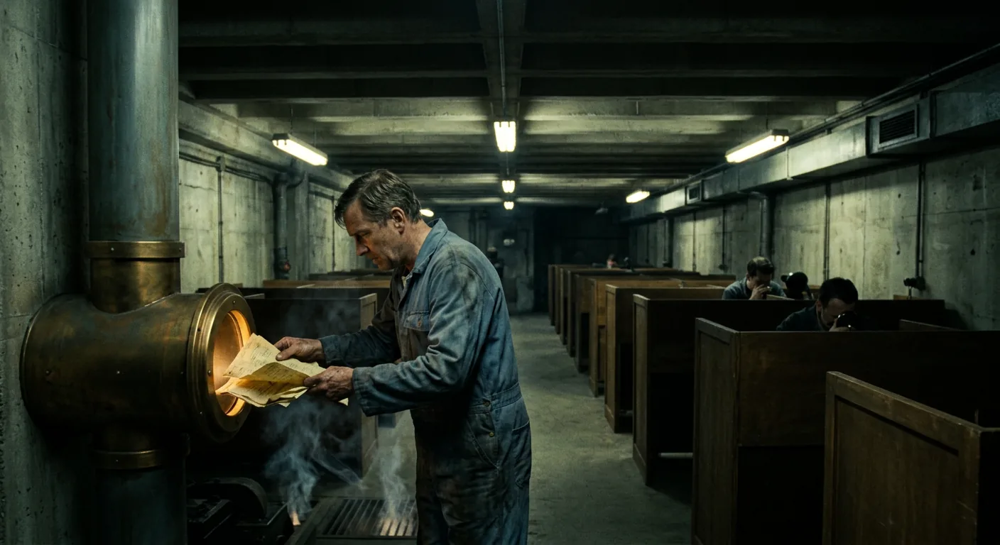
IV
Winston began his workday with an unconscious sigh—a breath of weariness that even the telescreen's omnipresent surveillance could not suppress—and drew the speakwrite toward him, blowing dust from its mouthpiece before settling into his cubicle in the Records Department. His workspace was equipped with the essential machinery of his trade: pneumatic tubes delivering messages and newspapers, and the memory hole, that ubiquitous slot through which every scrap of inconvenient documentation vanished into hidden furnaces below.
The morning's assignments arrived as four cryptic slips, each bearing instructions in the abbreviated jargon of the Ministry. Three were routine matters: Big Brother's speech had predicted a Eurasian offensive in North Africa when the attack had actually materialized in South India; production forecasts required adjustment to match output figures that were themselves fabrications; the Ministry of Plenty's categorical pledge regarding chocolate rations needed revision, since the promised stability would shortly become a reduction from thirty grams to twenty. Winston corrected each discrepancy with practiced efficiency, feeding his alterations into the pneumatic system while consigning the originals to the memory hole's consuming flames.
The machinery of falsification extended far beyond Winston's cubicle. Throughout the windowless hall, workers murmured into speakwrites, each engaged in their particular form of historical revision. A sandy-haired woman spent her days erasing the names of vaporized persons—her own husband among those who had ceased to exist. Ampleforth, a dreamy man with hairy ears, labored over ideologically offensive poems, producing sanitized versions for the anthologies. Beyond this hall lay printing shops, photography studios equipped for forgery, voice actors, reference clerks, and somewhere the anonymous directing brains who determined which fragments of the past should be preserved, which falsified, and which obliterated entirely.
Yet Winston understood that even the word "forgery" missed the essential absurdity of his work. The statistics he manipulated bore no connection to reality in either their original or rectified forms. Boot production figures were astronomical fantasies while half of Oceania went barefoot. Everything faded into a shadow-world where even the calendar year grew uncertain.
The fourth message presented a more intricate challenge, one that stirred in Winston something approaching professional satisfaction. Comrade Withers, once a prominent Inner Party member decorated for his work with the FFCC, had become an unperson. The organization had dissolved; Withers had simply ceased to exist. Winston's task was to rewrite Big Brother's Order for the Day so thoroughly that no trace of Withers remained. Across the hall, the secretive Tillotson was almost certainly working on the same assignment—perhaps a dozen workers were producing rival versions, from which some master brain would eventually select the chosen lie.
Rather than merely reverse the speech's content, Winston invented something entirely new: Comrade Ogilvy, a model Party member who had never drawn breath. He dictated the biography with fluency—the child who refused all toys except weapons, the boy who denounced his uncle to the Thought Police, the young man who designed a hand grenade that killed thirty-one Eurasian prisoners, the hero who weighted himself with his machine gun and leapt into the Indian Ocean rather than surrender his despatches. Ogilvy was a total abstainer, celibate, devoted to nothing but Ingsoc and the destruction of enemies.
When Winston finished, he felt a curious certainty that his version would prevail over Tillotson's. Comrade Ogilvy, unimagined an hour before, was now a fact. One could create dead men, it seemed, though not living ones—and once the act of forgery was forgotten, Ogilvy would exist upon precisely the same evidence as Charlemagne or Julius Caesar, his fabricated heroism indistinguishable from authentic history.
The morning's work complete, Winston sat amid the endless rustle of papers and the hum of voices reshaping the past, though even this practiced numbness could not entirely suppress the thoughts beginning to stir beneath the surface of his obedience.
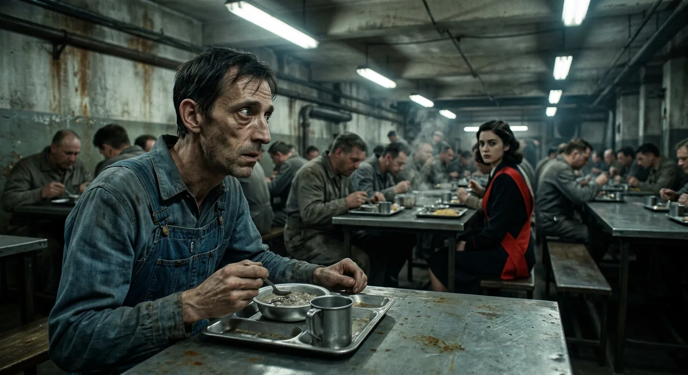
V
Deep beneath the Ministry of Truth, in a canteen thick with the sour reek of metallic stew and Victory Gin, Winston shuffled through the lunch queue alongside his colleague Syme—a philologist engaged in compiling the Eleventh Edition of the Newspeak dictionary. The word "friend" no longer existed in any meaningful sense; one had comrades, and Syme was among the more tolerable of them, though his mournful, protuberant eyes seemed always to be searching your face for something incriminating. When Syme asked about razor blades, Winston lied instinctively, hoarding his two unused blades while claiming he'd used the same one for six weeks. Such petty deceits had become reflexive. The Party shops failed perpetually—buttons one month, shoelaces the next, razor blades now—and survival demanded furtive scrounging on the so-called free market.
Over greasy trays of pinkish-gray stew and milkless Victory Coffee, Syme launched into rapturous discourse on his work. The beauty of Newspeak, he explained with pedantic passion, lay not in creating words but in destroying them—cutting language to the bone until thoughtcrime became literally impossible. Every synonym eliminated, every antonym collapsed into its opposite: "ungood" instead of "bad," "plusgood" instead of "excellent." By 2050, he predicted, no human being would remain capable of understanding their present conversation. The whole literature of the past—Chaucer, Shakespeare, Milton—would exist only in Newspeak versions, transformed into something contradictory of what they once were. "Orthodoxy is unconsciousness," Syme declared with mystical satisfaction.
Winston listened and smiled when required, but a cold certainty settled over him: Syme would be vaporized. He was too intelligent, saw too clearly, spoke too plainly. The Party did not tolerate such dangerous clarity, however orthodox the vessel containing it.
Their meal was interrupted by Parsons, Winston's neighbor from Victory Mansions—a sweating, boyish man who seemed perpetually dressed in the invisible uniform of the Spies he had never outgrown. He collected Winston's subscription for Hate Week and boasted proudly of his daughter's vigilance: the seven-year-old had followed a stranger for two hours and handed him over to the patrols, suspicious of his foreign-looking shoes. The man's fate remained unspoken but unmistakable—Parsons mimed a rifle shot and clicked his tongue.
A telescreen announcement blared triumphantly about increased production and a raised chocolate ration—twenty grams weekly, presented as bounty. Winston alone seemed to remember that yesterday the ration had been announced as a reduction to twenty grams. Parsons swallowed it with animal stupidity; the quacking orthodox man at the next table swallowed it fanatically; even Syme swallowed it through some complex mechanism of doublethink. Was Winston alone in possessing memory?
He surveyed the grimy canteen with its battered furniture and greasy surfaces, the ugly, ill-favored Party members who bore no resemblance to the blond, muscular ideal of the propaganda posters. Always there was that protest in the stomach, that sense of being cheated of something one had a right to possess.
Then a violent jerk pulled him from his reverie. The dark-haired girl from the Fiction Department had turned and was watching him with curious intensity. Terror flooded Winston's spine—was she Thought Police, or worse, an amateur spy? He could not recall if his features had been properly controlled during his treasonous reflections. When the telescreen whistle summoned them back to work, the three men sprang up, and the tobacco fell from Winston's carefully hoarded cigarette—one more small loss in a life built entirely of them.
The girl's watching eyes lingered in his mind like a splinter, and Winston carried that unease with him as he rejoined the labyrinthine corridors of the Ministry, uncertain whether he was being hunted or merely haunted by his own paranoia.
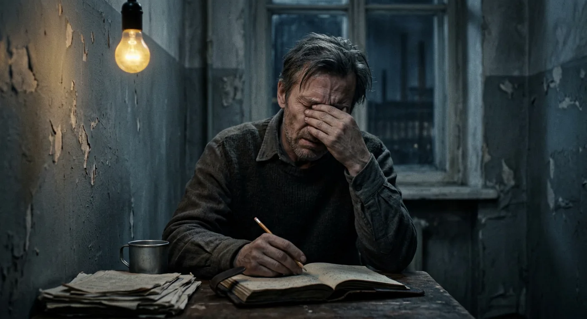
VI
Winston sat hunched over his diary, forcing himself to record a memory that clawed at him with particular viciousness. Three years prior, on a dim evening near one of the railway stations, he had encountered a woman standing beneath a barely functional street lamp. Her face had been painted thick and white, lips bright red—a mask that drew him precisely because Party women never painted their faces. The absence of telescreens, the offered price of two dollars, the narrow street empty of witnesses: he had followed her through a doorway, across a backyard, down into a basement kitchen.
But the writing came hard. Winston found himself pressing his fingers against his closed eyes, fighting the urge to scream obscenities, to smash his head against the wall, to hurl the inkpot through the window. One's worst enemy, he reflected with the clinical detachment that had become habit, was one's own nervous system. He recalled passing a man in the street weeks before—an ordinary-looking Party member whose face had twitched involuntarily, a spasm rapid as a camera shutter. That poor devil was done for. The body betrayed what the mind struggled to conceal, and the deadliest danger of all was talking in one's sleep. Against that, no guard existed.
The memory of the basement kitchen conjured another figure: Katharine, his wife. Married still, technically, though they had separated nearly eleven years ago after just fifteen months together. The Party forbade divorce but encouraged separation when no children resulted. Katharine had possessed a noble, aquiline face that promised depth yet delivered nothing—a mind composed entirely of slogans, a human sound-track for Party orthodoxy. Winston might have endured her vapidity had it not been for the matter of sex. To embrace her was to embrace a wooden image; she would lie with eyes shut, neither resisting nor cooperating, merely submitting. Yet she had insisted they continue the weekly performance—"making a baby," she called it, or "our duty to the Party"—until finally, mercifully, no child appeared and they parted.
This was, Winston understood, precisely what the Party intended. Its undeclared purpose was not merely to prevent loyalties beyond its control but to drain all pleasure from the sexual act, to transform eroticism into something disgusting and mechanical. Organizations like the Junior Anti-Sex League advocated complete celibacy; Newspeak had already coined *artsem* for artificial insemination. Through careful conditioning—cold water, martial music, endless slogans—the Party had rendered its women impregnable walls of chastity. And so Winston was left with furtive encounters in prole districts, joyless transactions tacitly tolerated because they posed no threat to Party power.
He forced himself to continue writing. In the lamplight of that basement kitchen, the woman had been revealed at last: old, fifty at least, her thick paint cracking like a cardboard mask, her mouth fallen open to expose only cavernous blackness where teeth should have been. He had gone ahead and done it just the same.
Winston pressed his fingers to his eyes once more. The confession lay on the page, yet the therapy had not worked. The urge to scream remained as fierce as ever, and somewhere beneath it stirred a deeper longing—not merely for physical release, but for an act of genuine rebellion, a connection the Party could not control or defile.
It was a longing that would prove difficult to suppress.
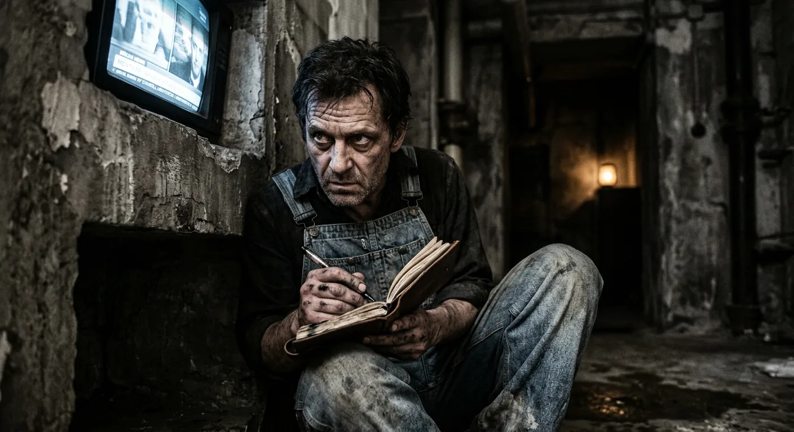
VII
*If there is hope, it lies in the proles.*
Winston inscribes this proposition in his diary with the desperate conviction of a man grasping at arithmetic in a world where numbers have become negotiable. The logic appears sound enough: the proles constitute eighty-five per cent of Oceania's population, a vast reservoir of potential force that could sweep the Party away like a horse shaking off flies. The Party cannot be overthrown from within—its enemies, if such creatures exist, cannot so much as identify one another. Rebellion among Party members amounts to nothing more than a certain look in the eyes, perhaps a whispered syllable. But the proles, requiring no conspiracy, needing only to become conscious of their own strength, could blow the entire apparatus to pieces tomorrow morning.
And yet.
Winston recalls walking through a crowded street when a tremendous cry erupted from hundreds of women's throats—a great formidable sound of anger and despair that set his heart leaping. A riot at last, the proles breaking loose. But when he reached the source, he found only a mob of two or three hundred women crowding round a market stall, their faces tragic over the matter of tin saucepans. The supply had given out. Two bloated women tore at the same pot until the handle came off. Winston watched with disgust, though he could not forget the frightening power that had sounded in that cry. Why could they never shout like that about anything that mattered?
He writes: *Until they become conscious they will never rebel, and until after they have rebelled they cannot become conscious.*
The Party, naturally, maintains contradictory positions on the proles. They were liberated from capitalist bondage, yet they remain natural inferiors requiring subjection. In practice, very little is known about them, and less is required. Left to themselves like cattle, they follow ancestral patterns—birth, gutters, work at twelve, marriage at twenty, middle age at thirty, death at sixty. Heavy labor, petty quarrels, football, beer, gambling. A few Thought Police agents move among them, eliminating the occasionally dangerous individual, but no attempt is made at ideological indoctrination. As the Party slogan states: *Proles and animals are free.*
Winston scratches his varicose ulcer and contemplates the impossibility of knowing what life before the Revolution was actually like. He copies passages from a children's history textbook describing the horrors of capitalism—starving children, cruel masters, fat ugly men in top hats. The *jus primae noctis*. Yet how much of it is lies? The only evidence to the contrary is the mute protest in one's own bones. Modern life's truly characteristic quality is not its cruelty but its bareness, its dinginess—slogging through dreary jobs, fighting for space on the Tube, darning worn socks.
Once, Winston possessed concrete evidence of falsification. A photograph from the *Times* showing Jones, Aaronson, and Rutherford at a Party function in New York on a date when, according to their confessions, they had been on Eurasian soil betraying military secrets. The confessions were lies. He had held proof between his fingers for thirty seconds before dropping it into the memory hole. The past not only changed, but changed continuously.
*I understand HOW*, he writes. *I do not understand WHY.*
He wonders if perhaps a lunatic is simply a minority of one. The Party would announce that two and two made five, and you would have to believe it. The heresy of heresies was common sense. Yet his courage stiffens unexpectedly as O'Brien's face floats into his mind. He is writing for O'Brien, to O'Brien. The obvious and the true must be defended. Truisms are true. Stones are hard, water is wet.
*Freedom is the freedom to say that two plus two make four. If that is granted, all else follows.*
With this axiom committed to paper, Winston has armed himself with the most dangerous weapon imaginable—simple arithmetic—though whether it will prove sufficient against an enemy capable of rewriting mathematics itself remains terrifyingly uncertain.
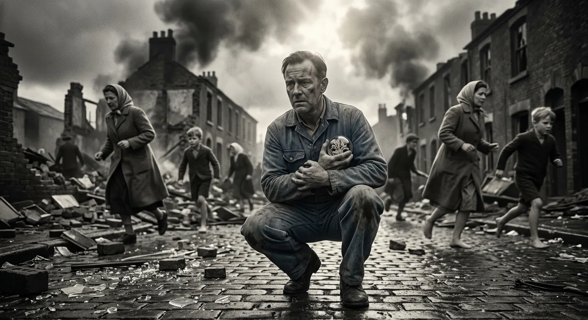
VIII
The scent of real coffee drifting from a doorway arrested Winston mid-stride, transporting him for two fleeting seconds to the half-forgotten landscape of childhood before a slamming door severed the memory as cleanly as a blade. His varicose ulcer throbbed from kilometers of walking—this was his second missed evening at the Community Center in three weeks, a reckless indulgence in what Newspeak termed *ownlife*. Yet the April balminess had made the prospect of creaking camaraderie and gin-soaked lectures intolerable, and so he had wandered into the brown-colored prole slums north of what had once been Saint Pancras Station.
"If there is hope, it lies in the proles." The words from his diary repeated themselves like an incantation both mystical and absurd. Around him the streets swarmed with humanity—girls with crudely lipsticked mouths, waddling women who foretold their futures, barefooted children scattering through puddles. Two women fell silent at the sight of his blue overalls, regarding him with the wariness reserved for unfamiliar animals. A rocket bomb—"steamer," the proles called it—sent the street into commotion; Winston flung himself down as the pavement heaved. Rising, he found himself covered in glass fragments. Two hundred meters ahead, houses lay demolished beneath a black plume of smoke. A severed human hand, whitened with plaster dust except for its bloody stump, lay on the cobblestones. Winston kicked it into the gutter and walked on. Within minutes, the sordid life of the streets continued as though nothing had occurred.
Outside a pub, three proles argued with violent passion over lottery numbers—the Lottery being their principal reason for remaining alive, their anodyne and intellectual stimulant. Winston knew, as all Party members knew, that the prizes were largely imaginary, the winners nonexistent persons. Yet these people could perform staggering feats of memory over meaningless numbers while remaining incapable of comparing one age with another.
He found himself, as if guided by some suicidal instinct, outside the junk shop where he had purchased his diary. An old prole with prawn-like white mustaches disappeared through a pub doorway, and Winston followed—driven by the lunatic notion that this man, who must have been middle-aged before the Revolution, might provide truthful testimony about the capitalist past. Inside, he bought the old man drinks and pressed him for answers about oppression, about whether life had been better or worse before. But the old man's memory yielded only rubbish—quarrels, top hats, a drunken shove on Boat Race night. The relevant facts lay perpetually outside the range of his vision.
Winston entered the junk shop and encountered Mr. Charrington, a benevolent, spectacled proprietor who sold him a beautiful glass paperweight containing coral from the Indian Ocean—an object possessing the air of belonging to an utterly different age. Upstairs, a room without telescreen awakened in Winston an ancestral memory of security, of sitting utterly alone with nobody watching. Mr. Charrington taught him fragments of a nursery rhyme about London churches: *Oranges and lemons, say the bells of St. Clement's*.
Stepping onto the pavement humming the half-remembered tune, Winston's heart turned to ice: the dark-haired girl from the Fiction Department was walking toward him, not ten meters away. She looked him straight in the face, then passed on as though she had not seen him. The coincidence was impossible—she must be spying on him. He stumbled home, the glass paperweight banging against his thigh, his bowels liquid with terror, contemplating the torture that would inevitably precede his death.
Sitting before his diary that night, the Party slogans tolling through his mind like a leaden knell, Winston understood that the body always betrays in moments of crisis, that even now his physical anguish made consecutive thought impossible—and that somewhere ahead, in the place where there is no darkness, his fate already waited for him.
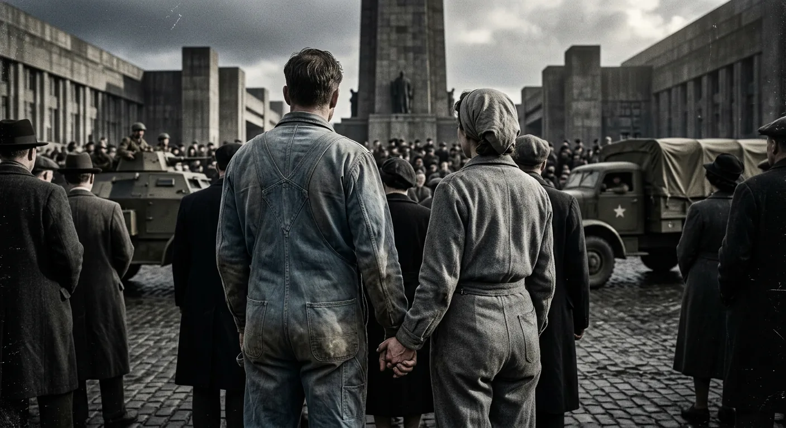
TWO
The encounter happened in the middle of a morning, in that long, brightly lit corridor where nothing ought to occur except the mechanical transit of bodies between one place of work and another. Winston saw the dark-haired girl approaching—four days since he had spotted her outside the junk shop, four days of accumulating dread—and noted the sling on her arm, the same drab color as her overalls, likely the result of some routine crushing in the Fiction Department's machinery. Then she stumbled, fell hard on her injured side, and cried out in pain.
What happened next was a thing Winston could not have predicted in himself. Here was the enemy, the creature he had imagined smashing with a cobblestone, and yet he moved instinctively to help her, felt the echo of her pain in his own body. She rose pale and trembling, thanked him with the perfunctory word "comrade," and walked on. The whole business occupied perhaps half a minute, conducted in plain view of a telescreen, their faces betraying nothing. But in the seconds of contact, she had pressed something into his hand—a scrap of paper folded small.
He carried it to his cubicle, forced himself to wait five agonizing minutes, his heart hammering with a violence that seemed surely audible. The possibilities cycled through his mind: a trap laid by the Thought Police, a summons to death, or—and this wild hope refused to be suppressed—some communication from the Brotherhood, proof that resistance existed. When at last he unfolded the paper, three words met his eyes: *I love you.*
For the rest of that morning and the days that followed, Winston existed in a state of unbearable suspension. He concealed his agitation from the telescreens, endured Parsons's vapid enthusiasm about Hate Week preparations, performed his work of falsifying records, attended his obligatory evening at the Community Center—all while burning with the need to make contact. The difficulty was immense, every avenue of communication surveilled or foreclosed. Letters were opened as routine. Following her home meant loitering outside the Ministry. He did not even know her name.
After a week of near misses in the canteen—she on different shifts, surrounded by others, positioned beneath telescreens—Winston finally managed to sit at her table. They spoke in murmurs, faces down, spooning watery stew, exchanging the essential coordinates: Victory Square, nineteen hours, among a crowd where telescreens could not isolate their conversation.
He arrived early and waited beneath the fluted column topped by Big Brother's statue, dread tightening around him until he spotted her pretending to read a poster. The opportunity came when a convoy of Eurasian prisoners rolled through and the crowd surged forward. Winston fought his way to her side, and there, shoulder pressed to shoulder, she delivered instructions with military precision: Paddington Station, a half-hour train journey, a sequence of turns, a gate with the top bar missing, a path through field and lane and bushes to a dead tree covered in moss. Sunday afternoon. Fifteen hours.
The trucks filed past—sad Mongolian faces, leg irons clanking, eyes that flickered toward Winston and away. In the last vehicle stood an aged man with wrists crossed as though accustomed to being bound. And in those final seconds, hidden within the crush of bodies, the girl's hand found Winston's and held it. He memorized every detail: the long fingers, the work-hardened palm, the smooth flesh beneath the wrist. He realized he did not even know the color of her eyes. But that brief clasp was proof enough that what lay ahead was real, and as the crowd began to thin and they prepared to part, Winston understood that his life had already begun to veer toward whatever waited at the end of that half-remembered route.
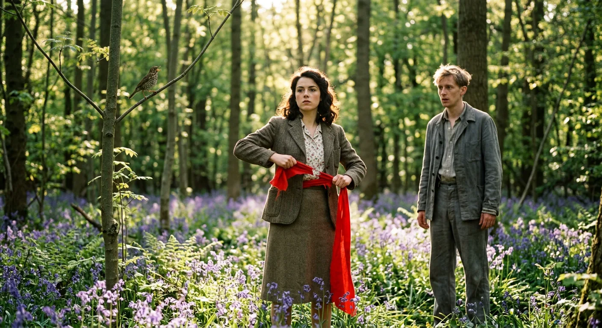
II
Winston made his way through dappled woodland on the second of May, stepping into pools of golden sunlight while bluebells carpeted the forest floor in a misty haze. The air itself seemed to caress him, carrying the drowsy call of ring doves from deep within the wood. He had arrived early to meet the dark-haired girl, and the journey from London had passed without incident—no patrols at the station, no awkward questions about his papers. The train had been crowded with proles enjoying the summery weather, including one sprawling family bound for the country to visit relatives and procure black-market butter.
Following her instructions, he found the cattle track that plunged between the bushes and knelt to gather bluebells, partly to occupy the waiting minutes and partly from a vague impulse to present her with flowers. The crack of a twig behind him sent ice through his veins, but he forced himself to continue picking—to turn would betray guilt. A hand touched his shoulder, and there she stood.
She led him silently through the wood, navigating boggy patches with practiced ease while Winston followed, clutching his wilting bouquet and nursing a heavy sense of inferiority. The May sunshine had exposed him as a creature of indoors, pale and soot-stained, and he half-expected her to recoil once she saw him clearly in daylight. But she brought him to a hidden clearing ringed by slender ash saplings—too thin to conceal any microphone—and turned to face him with a faintly ironic smile.
Her name was Julia. She had known his for some time, having spotted in his face the unmistakable mark of someone who was *against them*. When Winston confessed that he had once fantasized about murdering her, convinced she was Thought Police, she laughed with genuine delight. Far from the pious Party zealot he had imagined, Julia revealed herself as a practiced rebel who maintained an impeccable facade—troop leader, Anti-Sex League volunteer, banner-carrier at processions—while quietly despising everything the Party represented. She tore off her scarlet sash and produced a slab of real chocolate from the black market, its rich scent stirring some troubling half-memory Winston could not quite grasp.
They wandered through the checkered shade, arms around each other, until they reached the wood's edge. Winston recognized the landscape with a slow shock—the close-bitten pasture, the elms stirring in the breeze, the hidden stream where fish swam in green pools. It was his Golden Country, the dreamscape that had haunted him. A thrush alighted nearby and poured forth an astonishing torrent of song, and for a suspended moment all thought dissolved into pure sensation.
They returned to the clearing, and Julia undressed with a magnificent gesture that seemed to annihilate an entire civilization of repression. When Winston learned she had done this many times before—with Party members, though never the Inner Party swine—his heart leapt with savage hope. Her corruption was precisely what he wanted. Every act of desire, every betrayal of the Party's sterile purity, was a blow against it. Their embrace became a battle, their climax a victory. They slept afterward among the crushed bluebells.
Waking first, Winston studied Julia's sleeping face and reflected on what their union truly meant. In the old days, desire had been simple and uncomplicated. Now no emotion remained pure; everything tangled with fear and hatred. What had passed between them was not merely love or lust—it was a political act, a small defiance that would inevitably demand more of them both.
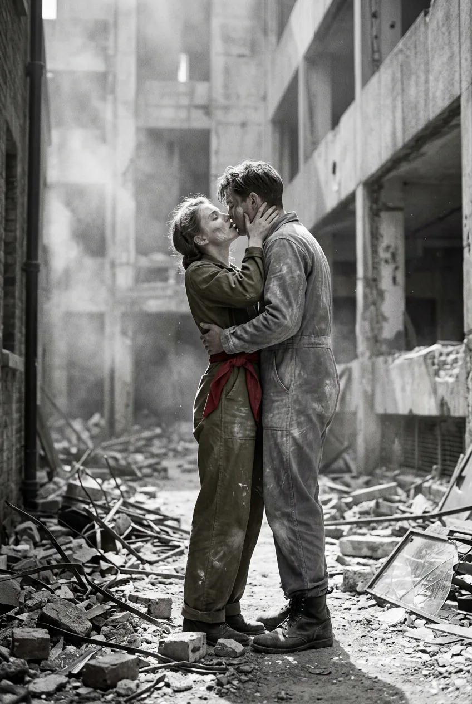
III
After waking in the woodland clearing, Julia transformed from lover to tactician with brisk efficiency. She knotted her scarlet sash, arranged her clothes, and began issuing instructions with the practiced authority of someone who had long ago mastered the geography of deception. Never return by the same route. Wait thirty minutes before following. Meet four evenings hence at an open market in one of the poorer quarters—she would pretend to browse for shoelaces, and if the coast was clear, she would blow her nose as he approached. Winston absorbed these protocols with the dutiful attention of a student, recognizing in Julia a practical cunning he himself lacked, accumulated through countless community hikes and furtive assignations.
She kissed him violently, then vanished through the saplings to distribute leaflets for the Junior Anti-Sex League. He still did not know her surname.
They never returned to that clearing. May brought only fragments of intimacy—one afternoon in the belfry of a bombed church, where the air hung thick with pigeon dung and summer heat, and otherwise brief intersections on crowded pavements. Their conversations flickered on and off like lighthouse beams, snipped into silence by approaching uniforms or hovering helicopters, resumed mid-sentence the following evening. Julia called it "talking by installments." Once, a rocket bomb knocked them flat in a side street, and Winston found himself kissing her chalk-white face through a layer of plaster dust, believing for one terrible instant she was dead.
Their working weeks stretched to sixty hours and beyond, their free days rarely aligned. Julia compensated through fanatical displays of orthodoxy—lectures, demonstrations, banners for Hate Week, collections for savings campaigns. Camouflage, she explained. Keep the small rules to break the big ones. She even convinced Winston to volunteer for munitions work, where he spent one evening weekly screwing together probable bomb fuses in a draughty workshop.
In the bell tower, surrounded by dust and twig-litter, Julia revealed herself more fully. Twenty-six years old, resident of a hostel reeking of thirty other girls, operator of novel-writing machines in the Fiction Department. She had worked in Pornosec, the sub-section producing sealed-packet pornography for proles—six interchangeable plots about spanking and girls' schools. She was not clever, she said, and did not much care for reading. Books were commodities, like jam or bootlaces.
Her first affair had come at sixteen, with a sixty-year-old Party member who later killed himself to avoid arrest. Since then, others. Life was simple: you wanted pleasure, the Party wanted to stop you, so you broke rules and survived. She hated the Party crudely, instinctively, but made no general criticisms, harbored no interest in doctrine or Brotherhood conspiracies. Organized revolt was stupid; the clever thing was evasion—a rabbit dodging a dog.
Winston described Katharine, his wife, whose body stiffened at his touch even as her arms clasped him, who performed their weekly "duty to the Party" with frigid determination. Julia understood immediately; she had endured the same sex talks, the same Youth Movement indoctrination. But she grasped what Winston had only sensed: the Party's sexual puritanism existed not merely to destroy private worlds beyond its control, but to bottle desire into hysteria, into war fever and leader worship. Marching, cheering, waving flags—all of it sex gone sour.
He told her of the chalk quarry eleven years past, the moment he had stood behind Katharine at the cliff's edge, completely alone, and thought of pushing. Julia said she would have done it. Winston admitted he was sorry he hadn't, though it would have changed nothing. In this game, he said, we cannot win. Some failures are simply better than others.
"We are the dead," he pronounced.
"We're not dead yet," Julia answered, pressing her body against his, warm and vital and insistent.
Then, with characteristic practicality, she scraped together a square of dust on the belfry floor, took a twig from a pigeon's nest, and began drawing a map for their next meeting—because even the doomed must plan their routes carefully.
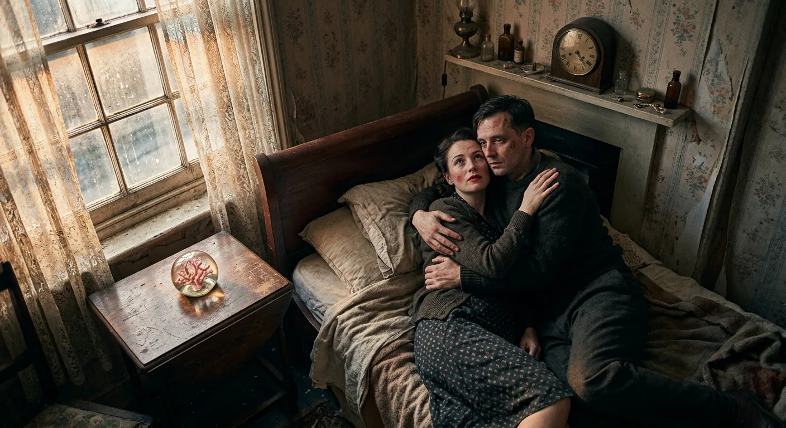
IV
Winston stood surveying the shabby little room above Mr. Charrington's shop, taking in its sparse furnishings with the keen, anxious eye of a man who knows he is stepping willfully toward his own destruction. The enormous bed with its ragged blankets, the old-fashioned twelve-hour clock ticking on the mantelpiece, the glass paperweight gleaming softly from the gateleg table—each object seemed to exist in defiance of the world outside, relics of a time the Party had labored to erase. He lit the battered oilstove and set water to boil, preparing the Victory Coffee he had brought, though the hands of the clock told him Julia would arrive in mere minutes. Folly, folly, his heart kept saying. Conscious, gratuitous, suicidal folly.
Mr. Charrington had raised no objections to renting the room, speaking of privacy in such vague, delicate terms that he seemed to fade from existence even as he mentioned the second entry through the backyard. Below the window, a prole woman vast as a Norman pillar sang a sentimental tune manufactured by the Party's versificator, her powerful contralto transforming mechanical rubbish into something almost human. Winston noted with grim wonder that he had never heard a Party member sing alone and spontaneously—such an act would have seemed dangerous, unorthodox.
The room had been born from longing for ordinary intimacy. When Julia's monthly cycle had prevented their planned meeting in the clearing, Winston had felt first anger, then an unfamiliar tenderness—a wish to walk openly with her through streets, buying household odds and ends, existing as married people might. Both knew renting the room was lunacy, each visit shortening the interval before the cellars of the Ministry of Love claimed them, yet the temptation of a hiding place truly their own proved irresistible.
Julia arrived carrying a canvas tool bag that concealed treasures unimaginable: real sugar, white bread, jam, milk, tea, and—filling the room with an aroma from some abolished childhood—genuine Inner Party coffee. She had procured cosmetics as well, painting her face with rouge and lipstick, transforming herself into something the Party forbade women to be. In this room, she declared, she would be a woman, not a comrade. They undressed and climbed into the mahogany bed, marveling at its size and springiness, and for a time they slept in the drowsy summer evening while peaceful sounds drifted up from the yard below.
Their tranquility shattered when Julia spotted a rat emerging from the wainscoting. Winston's reaction was visceral, uncontrollable—a terror connected to some recurring nightmare he could never quite bring into the light. Julia promised to stuff the hole before they left. They drank the real coffee, its silky sweetness almost forgotten after years of saccharine, and examined the glass paperweight together. Winston explained it was a fragment of history the Party had forgotten to alter; Julia, studying the engraving of St. Clement's Dane, surprised him by reciting part of the old rhyme his landlord had taught him, learned from a grandfather who had been vaporized when she was eight.
As darkness gathered in the room, Winston lay gazing into the paperweight's depths, feeling as though its crystal interior enclosed their small world completely—the bed, the table, the clock, Julia herself. The coral at its center seemed to fix their lives in a sort of eternity, a private universe suspended outside time, outside the Party's reach.
Yet even as he surrendered to this illusion of safety, the rat's appearance had planted something cold and prophetic in the evening's warmth, a reminder that no sanctuary remains hidden forever.
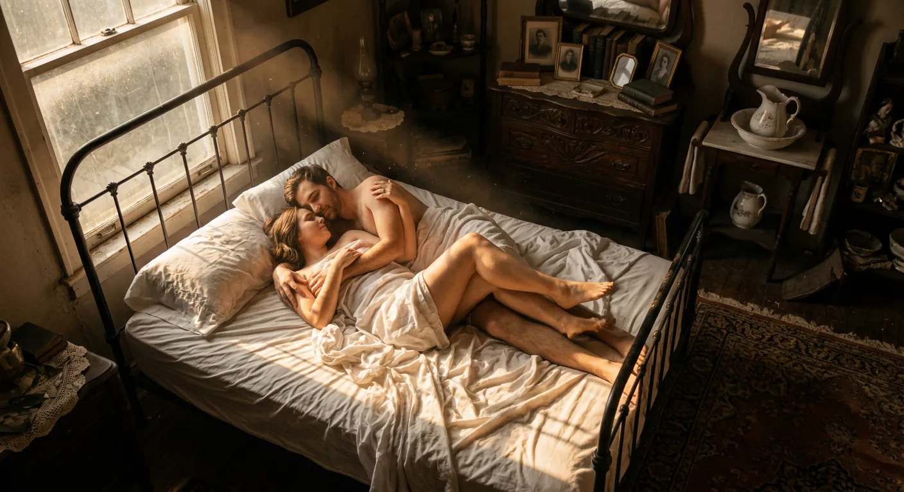
V
Syme had vanished. One morning he simply was not there, and within three days every trace of his existence had been methodically erased—a name excised from a committee list, nothing crossed out, merely shortened by one. It was enough. Syme had ceased to exist; he had never existed.
The baking summer heat pressed down upon London as preparations for Hate Week consumed the city in a fever of organized frenzy. Every Ministry worked overtime, their staffs churning out processions, pamphlets, effigies, and fabricated photographs. Julia's Fiction Department abandoned novels for atrocity literature while Winston labored through back files of the *Times*, altering and embellishing old news items destined for speeches. The new Hate Song—savage, drumlike, barely music at all—roared from telescreens and competed in midnight streets with the proles' sentimental favorites. Parsons, in his element, marshaled volunteers to festoon Victory Mansions with four hundred meters of bunting, his acrid sweat flowing as freely as his comradely exhortations.
A new poster blanketed every wall: a monstrous Eurasian soldier, expressionless and enormous, his submachine gun seeming to point directly at every passerby regardless of angle. The proles, normally indifferent to war, were being whipped into patriotic fury. Rocket bombs fell with increased frequency—one burying hundreds in a Stepney cinema, another tearing children apart on a playground. The neighborhood responded with demonstrations, effigy-burnings, looting, and finally the suffocation of an elderly couple suspected of foreign extraction.
Through it all, the room above Mr. Charrington's shop remained paradise. Winston and Julia met there four, five, six, seven times through June, lying naked beneath the open window while bugs multiplied in the heat. The physical change in Winston was remarkable: he had stopped drinking gin, grown fatter, his varicose ulcer had subsided to a brown stain, his morning coughing fits had ceased. The process of life had become tolerable. The room's mere existence sustained them—a pocket of the past where extinct animals might walk, presided over by Mr. Charrington, himself ghostlike, wandering among his worthless treasures and dredging up fragments of nursery rhymes he could never quite complete.
Both knew their arrangement could not last. Sometimes impending death felt as palpable as the bed beneath them; other times they indulged fantasies of escape—indefinite luck, Katharine's death and remarriage, proletarian disguises, suicide together. All nonsense, and they knew it. The unconquerable instinct was simply to hang on, spinning out a present without future.
They spoke of rebellion, of the Brotherhood, of O'Brien. Julia accepted Winston's intuition about O'Brien readily enough, yet she refused to believe in any organized resistance. The tales of Goldstein were Party invention; opposition could only be personal, secret, small acts of violence or disobedience. In certain ways she saw more clearly than Winston—she suspected the rocket bombs might be fired by Oceania itself to maintain fear, an idea that had never occurred to him, and she could barely suppress laughter during the Two Minutes Hate. Yet the mutability of the past meant nothing to her. When Winston mentioned that Oceania had been at war with Eastasia only four years prior, she could not even remember the enemy's name had changed. The invention of airplanes, the falsification of history, the story of Jones, Aaronson, and Rutherford—none of it horrified her. She would take risks, but only for something worthwhile, not old newspaper clippings.
"You're only a rebel from the waist downwards," Winston told her, and she laughed, delighted.
She knew when to cheer and when to boo, and that was all one needed. In a way, Winston realized, the Party's worldview imposed itself most successfully on those incapable of understanding it—they swallowed everything, and what they swallowed did them no harm, passing through like a grain of corn through a bird, leaving no residue behind.
Yet even as they lay together in their fragile sanctuary, forces beyond their comprehension were gathering, and the Brotherhood Winston had only dreamed of was about to make itself terrifyingly, irrevocably real.
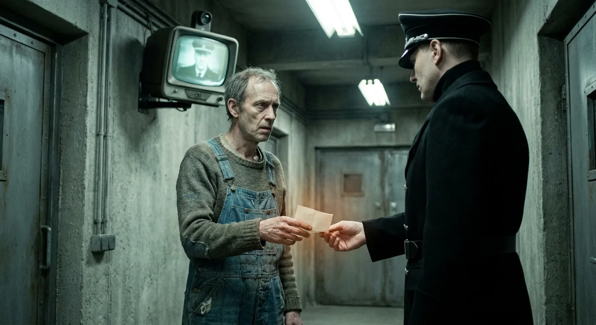
VI
It had happened at last. The moment Winston had awaited through all the grey, grinding years of his existence arrived in the Ministry corridor—that same corridor where Julia had pressed her secret note into his palm. A small cough behind him, deliberately placed, and Winston turned to find O'Brien standing there, larger than life, his presence both inevitable and terrifying.
Winston's heart hammered against his ribs. Every instinct screamed at him to flee, yet his body remained frozen, his tongue useless. O'Brien, however, moved with the practised ease of the Inner Party, laying a companionable hand on Winston's arm and steering them both forward as though they were merely colleagues engaged in pleasant discourse. His manner possessed that grave courtesy which set him apart from the brutal functionalism of his peers—a refinement that made him all the more dangerous, or perhaps all the more trustworthy. Winston could not yet say which.
The conversation unfolded as a carefully staged performance. O'Brien spoke of Winston's Newspeak articles, praised his elegant command of the diminishing language, and then mentioned consulting with a friend—an expert whose name had conveniently slipped his memory. Winston understood immediately. The reference could only be to Syme, and Syme was an unperson, vaporised, his very existence erased from all records. To mention him at all constituted thoughtcrime. By this small, deliberate transgression, O'Brien had bound them together as accomplices, had signalled that he too harboured forbidden thoughts.
The pretext that followed was almost absurdly thin: a tenth edition of the Newspeak dictionary, not yet officially released, which O'Brien happened to possess. Would Winston care to examine it? A messenger could be sent, but no—O'Brien was forgetful of such arrangements. Better for Winston to collect it himself. And with that, standing directly before a telescreen in full view of any watching eye, O'Brien produced a gold ink pencil and leather notebook, scrawled his address on a page, and pressed it into Winston's hand.
The audacity of the gesture was breathtaking. In a world where no directories existed, where citizens' addresses remained deliberately obscure, O'Brien had handed Winston the key to finding him. The message beneath the message was unmistakable: *If you ever want to see me, this is where I can be found.*
Winston memorised the address with care, then consigned the paper to the memory hole hours later, letting it vanish among the daily refuse of falsified records. The encounter had lasted two minutes at most, yet its weight pressed upon him like stone. The conspiracy he had long dreamed of—the Brotherhood, the resistance, the flickering hope of opposition—existed after all, and he had reached its outer edge.
He knew with cold certainty that he would answer O'Brien's summons. Tomorrow, perhaps, or weeks hence, but inevitably. The progression felt ordained, mechanical: first the secret thought, then the diary's opened pages, then words exchanged with Julia, and now this. Thoughts had become words; words had become actions. The final step waited for him in the Ministry of Love, and he had already accepted it. Even as O'Brien's meaning had crystallised in his mind, a deathly chill had crept through Winston's body—the sensation of lowering himself into a damp grave that had always been there, patient and waiting.
Yet acceptance did not equal peace, and as Winston turned these revelations over in his mind, he understood that the path forward would demand from him everything he had left to give.
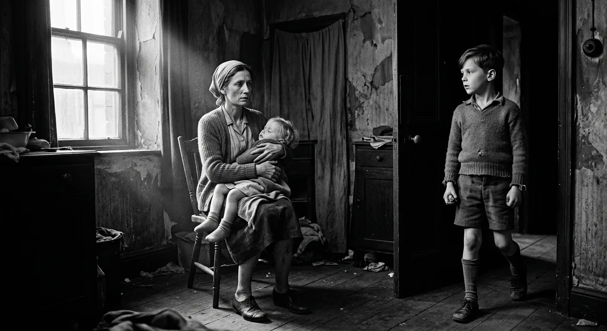
VII
Winston woke with tears streaming from his eyes, still immersed in the atmosphere of a vast, luminous dream. The dream had seemed to occur within the glass paperweight itself, yet the glass had become the dome of the sky, flooding everything beneath with soft, clear light that stretched toward interminable distances. At its center was a gesture—his mother's arm reaching out protectively—a movement that echoed across decades, reappearing in the footage he had seen of the Jewish woman sheltering her small boy from bullets before the helicopters tore them apart.
The dream had unlocked a memory Winston had deliberately buried for years. He could not have been older than twelve when it happened. His father had already vanished, and the world around them had devolved into chaos—periodic air raids, rubble choking the streets, gangs of uniformed youths, endless queues outside bakeries, and always, always the gnawing absence of enough food. He remembered scrounging through dustbins with other boys, scraping cinders from stale crusts, waiting for trucks to spill fragments of cattle feed onto the pocked roads.
His mother had changed after his father disappeared. She moved through her tasks with mechanical precision, a lay-figure animated by duty alone, often sitting motionless for hours nursing Winston's tiny sister—an ailing, simian-faced child of two or three who seemed to be fading by degrees. Winston remembered his own monstrous hunger, the way he had shouted and wheedled and snatched food from his dying sister's plate. When a chocolate ration appeared—two ounces to divide among three—he had demanded it all, and when his mother finally broke off three-quarters for him and gave the remaining sliver to the little girl, he had seized even that and fled.
He never saw his mother again. She and his sister simply vanished while he wandered the streets, the chocolate growing sticky in his fist. Whether they were taken to a labor camp or left to die, he never learned.
Julia, half-asleep beside him, dismissed the tale with drowsy pragmatism—all children were swine, she murmured—but Winston pressed forward with what truly mattered. His mother had possessed a kind of nobility rooted in private loyalties, in the conviction that an embrace given to a dying child held meaning regardless of its futility. The Party's true horror lay in severing people from such impulses, convincing them that feelings without material effect were worthless. Yet the proles, Winston realized, had retained this humanity. They loved one another without ideology, without asking what purpose it served.
He spoke the thought aloud: the proles were human; he and Julia were not. Their conversation turned to the inevitable end awaiting them—capture, torture, confession. Julia insisted the Party could extract words but never belief; they could not get inside you. Winston clung to this fragile hope: if staying human mattered even when it changed nothing, then perhaps they had already won something the Party could never reclaim.
Yet as they lay together in fragile peace, the unspoken question lingered—how long before the Party tested whether that inner heart truly remained impregnable?
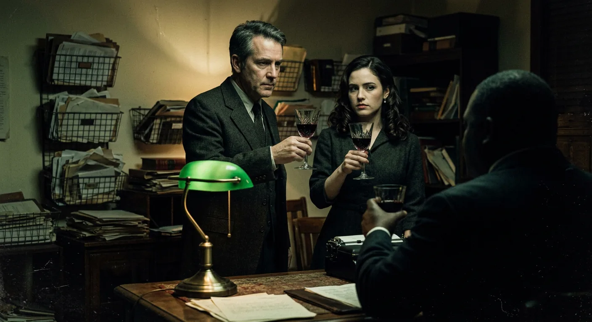
VIII
They had done it, they had done it at last.
Winston and Julia arrived separately at O'Brien's dwelling in the Inner Party quarter, that forbidden precinct of cream-papered walls and soundless carpets where the air itself smelled different—of good tobacco and proper food rather than cabbage and dust. Everything in the vast block of flats intimidated: the swift silent lifts, the white-jacketed servants, the exquisite cleanliness that Winston could not recall encountering anywhere in his grimy existence. A small dark-haired man with an expressionless, diamond-shaped face admitted them without question and led them to a long, softly lit room where O'Brien sat beneath a green-shaded lamp, surrounded by papers, speaking hybrid Newspeak into his speakwrite.
For a terrible stretched moment, Winston doubted everything—his flash of eye contact with O'Brien, the single equivocal remark, the dream-fed certainty that had brought him here. Then O'Brien rose, crossed to the telescreen, and switched it off with a sharp snap. Julia made a small sound of astonishment. The silence that followed was absolute.
What Winston confessed came out clumsy and pretentious even to his own ears: that they believed in a conspiracy, that they wished to join it, that they were enemies of the Party, thought-criminals, adulterers, willing to place themselves at O'Brien's mercy. O'Brien received these declarations without surprise. The servant Martin, he revealed, was one of them; he poured dark-red wine from a decanter, and they drank a toast to Emmanuel Goldstein—who existed, O'Brien confirmed, and who led a real organization called the Brotherhood.
Then came the catechism, delivered in a low, expressionless voice. Were they prepared to give their lives? To commit murder, sabotage, treason? To throw acid in a child's face if ordered? To each horror Winston and Julia answered yes. Only when O'Brien asked whether they would consent to separate forever did Julia cry out in refusal, and Winston, after a paralyzed silence, found the same word forming on his tongue: No.
O'Brien accepted even this. He explained the nature of the Brotherhood—no cellars full of conspirators, no code words, no list of members that Goldstein himself could betray. Only an indestructible idea, passed from mind to mind across generations. They would work in darkness, receive orders without explanation, and one day be caught, confess, and die. There would be no comradeship, no encouragement, no visible results within their lifetimes. They were the dead, he told them, their true existence scattered into a future perhaps a thousand years distant.
Yet Winston gazed at O'Brien's powerful shoulders and blunt civilized face with something near worship. Here was a man equal to any stratagem, incapable of being defeated. When Julia departed—a white tablet on her tongue to mask the smell of wine—O'Brien turned to practical matters: the room above Mr. Charrington's shop would serve for now; a copy of Goldstein's book would reach Winston through an arranged mishap with a briefcase.
Before leaving, Winston asked about the old rhyme he had been piecing together. O'Brien completed the stanza without hesitation—*Oranges and lemons, say the bells of St. Clement's*—and the final line Winston had never known fell into place. They spoke briefly of meeting again, perhaps in the place where there is no darkness, and O'Brien's hand crushed Winston's in a powerful grip. Then Winston was at the door, looking back at the green-shaded lamp and the wire baskets heavy with papers, already dismissed from O'Brien's attention as the telescreen switch hovered beneath the man's waiting fingers.
Within thirty seconds, Winston knew, O'Brien would resume his interrupted and important work on behalf of the Party—a thought whose full weight had not yet settled upon him as he stepped back into the world outside.
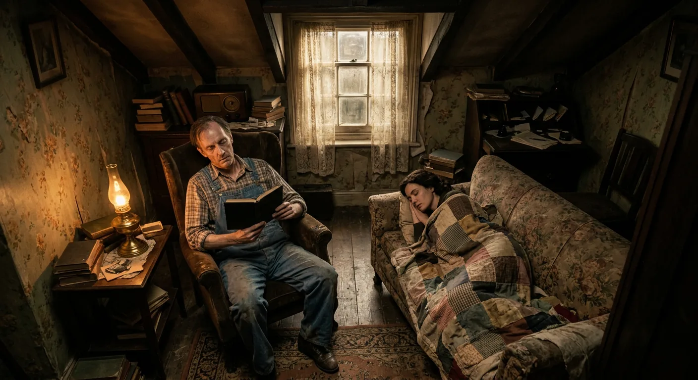
IX
Winston was gelatinous with fatigue—the word arriving unbidden, perfectly apt. His body had become translucent with exhaustion, drained of all substance by ninety hours of labor crammed into five days, leaving only a framework of nerves and aching joints through which sensation passed magnified and raw. Everyone at the Ministry had worked the same punishing hours, and now it was finished. He had six hours for the hiding place above Mr. Charrington's shop, another nine for his own bed, and the heavy briefcase bumping against his knee with each step contained the book he had carried for six days without once opening.
The crisis that had demanded such frantic labor was simple enough to describe, impossible to absorb. On the sixth day of Hate Week, amid the drumrolls and massed planes and booming guns, while the collective hatred of Eurasia was reaching its quivering climax and the crowd would gladly have torn apart the two thousand Eurasian war criminals scheduled for public hanging—at precisely that moment it was announced that Oceania was not at war with Eurasia. Oceania was at war with Eastasia. Eurasia was an ally. There was, of course, no admission that anything had changed. Winston had witnessed it himself: the Inner Party orator on the scarlet-draped platform, a grotesque Rumpelstiltskin figure gripping the microphone, had received a slip of paper mid-sentence and switched enemies without breaking syntax, without altering his tone, the names simply becoming different while the hatred continued uninterrupted. Within minutes the crowd had torn down the now-treasonous banners and posters, blaming Goldstein's agents for the sabotage, and the Hate proceeded exactly as before with only the target revised.
Then came the real work. Oceania had always been at war with Eastasia—this required that five years of political literature be rectified at lightning speed. Newspapers, films, photographs, records of every description had to be altered, though the processes involved could not be called by their true names. The Ministry's staff slept on mattresses in corridors, subsisted on sandwiches and Victory Coffee, and each time Winston returned from his three-hour rest periods he found fresh cylinders piled on his desk like snowdrifts. The work demanded care and imagination, geographical knowledge, the creative effort of making forgery perfect—and Winston found himself as anxious as anyone that it should be flawless, despite knowing that every word he murmured into the speakwrite was deliberate falsehood.
By the sixth morning it was done. A mighty deed that could never be mentioned had been achieved: no documentary evidence remained that the war with Eurasia had ever occurred. Winston went home, shaved, nearly drowned in a tepid bath, then climbed the stairs above the junk shop and finally opened the book—Goldstein's forbidden treatise on oligarchical collectivism.
What he read there, alone and safe without telescreen or listening ear, told him nothing new yet told him everything. The text systematized what he had always suspected: that war between the three superstates was perpetual by design, that its purpose was not victory but the consumption of surplus goods that might otherwise raise living standards and thus threaten hierarchy, that the Party's power rested on poverty, ignorance, and the controlled insanity of doublethink. He read aloud to Julia until she fell asleep, absorbing chapter after chapter that explained how but never quite why. Still, when he closed the book and pulled the coverlet over them both, he felt not despair but validation. Being in a minority of one did not make you mad. He drifted toward sleep murmuring a phrase that seemed to contain profound wisdom: "Sanity is not statistical."
Yet even as Winston surrendered to that fragile sense of safety, the room above Mr. Charrington's shop remained what it had always been—a trap whose jaws had not yet closed.
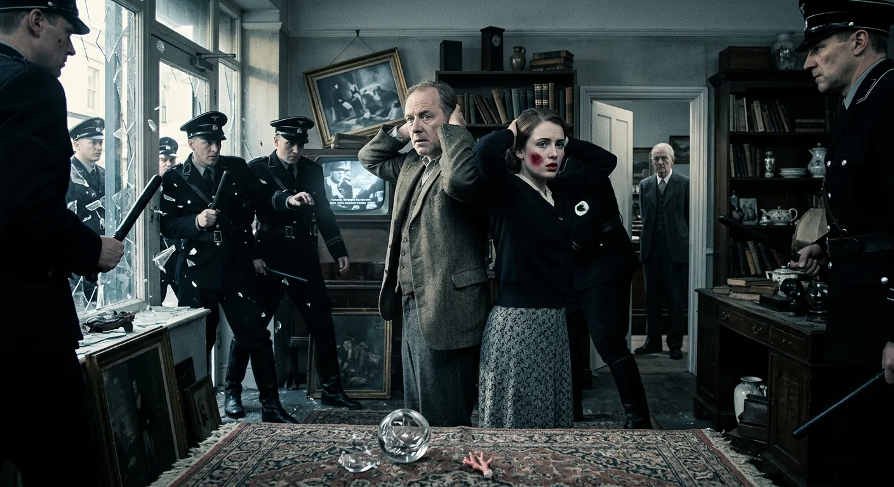
X
Winston woke in the room above the antique shop to the familiar strains of that insipid prole song drifting up from the yard below, the same tune that had somehow outlasted even the Hate Song in its mindless popularity. Julia stirred beside him, complained of hunger and cold, noted with vague puzzlement that the oil stove had run dry though she could have sworn it was full. They dressed and drifted to the window.
Below, the washerwoman labored on in her ceaseless rhythm—corking and uncorking herself, pegging out endless diapers, her thick arms reaching for the line, her body massive and work-roughened as an overripe turnip. Yet watching her, Winston found himself struck by an unexpected revelation: she was beautiful. Not beautiful as Julia was beautiful, supple and young, but beautiful as the fruit is beautiful beside the flower. Her body, blown monstrous by childbearing and hardened coarse by thirty years of scrubbing and mending and laundering, possessed a granite solidity that seemed to him suddenly magnificent.
With Julia's waist encircled by his arm, Winston gazed down at this unconquerable figure and felt something approaching mystical reverence. From their own bodies no child would ever come—that was the one thing they could never do. They could only pass on the secret by word of mouth, mind to mind. But the woman below, mindless as she might be, stored up in her strong arms and warm heart and fertile belly the vitality the Party could not kill. If there was hope, it lay in the proles. The future belonged to them, to the hundreds of millions of people all over the world, held apart by walls of hatred and lies yet almost exactly the same, storing up in their hearts and muscles the power that would one day overturn everything. Sooner or later, strength would change into consciousness.
"We are the dead," Winston said quietly.
"We are the dead," Julia echoed.
"*You are the dead*," said an iron voice behind them.
They sprang apart, entrails turning to ice. The voice repeated itself—coming, Julia breathed, from behind the picture. A catch snapped, glass crashed, and the picture fell to reveal the telescreen that had watched them all along. The iron voice commanded them to stand in the middle of the room, back to back, hands clasped behind their heads. They obeyed. There was no thought of running. Boots trampled below and outside; the yard filled with men; the washerwoman's singing stopped abruptly in a confusion of shouts and a yell of pain. Then came a thin, cultivated voice Winston half-recognized, completing the old nursery rhyme with terrible cheerfulness: "*Here comes a chopper to chop off your head!*"
A ladder burst through the window. Black-uniformed men with truncheons flooded the room. Winston stood motionless, knowing that to keep still was the one thing that mattered. A man smashed the glass paperweight on the hearthstone, and the fragment of coral—that tiny crinkle of pink—rolled across the mat, impossibly small. Another man drove his fist into Julia's solar plexus; she doubled up gasping, was hoisted by knees and shoulders, and carried out like a sack. Winston glimpsed her face upside down, yellow, contorted, rouge smeared on both cheeks—and that was the last he saw of her.
Then lighter footsteps sounded, and Mr. Charrington entered. But he was transformed. The white hair had turned black, the spectacles were gone, the stooped body had straightened and grown larger, the whole face subtly altered into something alert and cold—a man of perhaps thirty-five. The cockney accent had vanished; it was his voice that had quoted the nursery rhyme. For the first time in his life, Winston understood with full knowledge exactly what he was looking at: a member of the Thought Police.
The trap had been perfect from the beginning, and now it had closed.
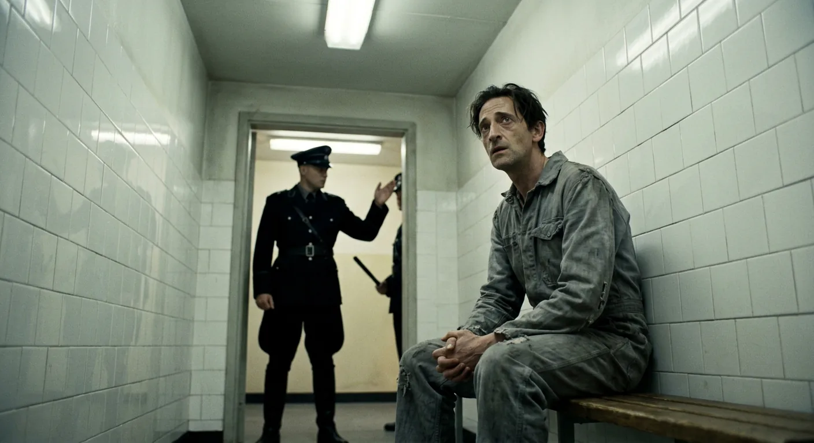
THREE
He did not know where he was. The cell offered no certainties—only glittering white porcelain walls, concealed lamps flooding everything with cold light, and a low mechanical hum that might have been the air supply. Four telescreens watched from four walls. A bench ran the perimeter, broken only by a seatless lavatory pan. Winston sat as still as he could manage, hands crossed on his knees, hunger gnawing at him with an unwholesome persistence. When he slipped a hand toward his pocket, hoping for breadcrumbs, the telescreen barked his name and number immediately.
Before this place—the Ministry of Love, presumably, though he could not be certain—there had been another cell, filthy and crowded with prisoners of every description. The common criminals had shouted, fought, smuggled food, even bellowed insults at the guards and telescreens without apparent consequence. The political prisoners, by contrast, sat silent and terrified, speaking to no one. Winston had observed the strange hierarchy: gangsters and murderers held positions of trust in the labor camps while politicals performed the degrading work. An enormous drunken woman had been flung across his lap, vomited on the floor, and suggested with sodden sentimentality that she might be his mother. Perhaps she was—people changed after twenty years in the camps.
Time became impossible to measure. His thoughts contracted to six points: the pain in his belly, a piece of bread, blood and screaming, O'Brien, Julia, the razor blade. He could not feel love for Julia now—only the abstract knowledge that he loved her and would not betray her. O'Brien occupied his mind more often, along with the faint hope that the Brotherhood might send the blade, that five seconds of resolve might spare him what was coming.
Prisoners came and went. Ampleforth appeared, bewildered, arrested for leaving the word "God" in a Kipling poem because the only available rhyme was "rod." Parsons arrived next, blubbering, charged with thoughtcrime after his seven-year-old daughter reported him for saying "Down with Big Brother" in his sleep. He expressed doleful pride in the child's vigilance.
Through it all, the dread phrase "Room 101" surfaced repeatedly, spoken by guards in flat tones that turned prisoners ashen. A skull-faced man, visibly dying of starvation, was dragged toward it after offering to betray his wife and children, after trying to substitute another prisoner in his place, after clinging to the bench leg until a guard's boot shattered his fingers. When the chinless man who had offered him bread received a blow that knocked teeth and blood across the floor, the others sat motionless, hands crossed on their knees, as they had learned to do.
Winston sat alone for hours, thirst replacing hunger, dizziness blurring his thoughts. The piece of bread remained on the floor where it had fallen. Terror returned whenever his physical sensations relented. He thought of Julia suffering somewhere, asked himself whether he would double his own pain to save her, and found the question unanswerable in a place where nothing existed except pain and the foreknowledge of pain.
Then the boots approached again. The door opened.
O'Brien stepped through, and Winston lurched to his feet, shock overwhelming caution. "They've got you too!" he cried. But O'Brien's expression held only mild, regretful irony as he stepped aside to reveal a broad-chested guard holding a long black truncheon. "You knew this, Winston," O'Brien said quietly. "Don't deceive yourself. You did know it—you have always known it." And in that moment of recognition, before the truncheon found his elbow and the world exploded into yellow light, Winston understood that he had indeed always known, had known from the very beginning, though there was no longer any time to think of what that knowledge might mean.
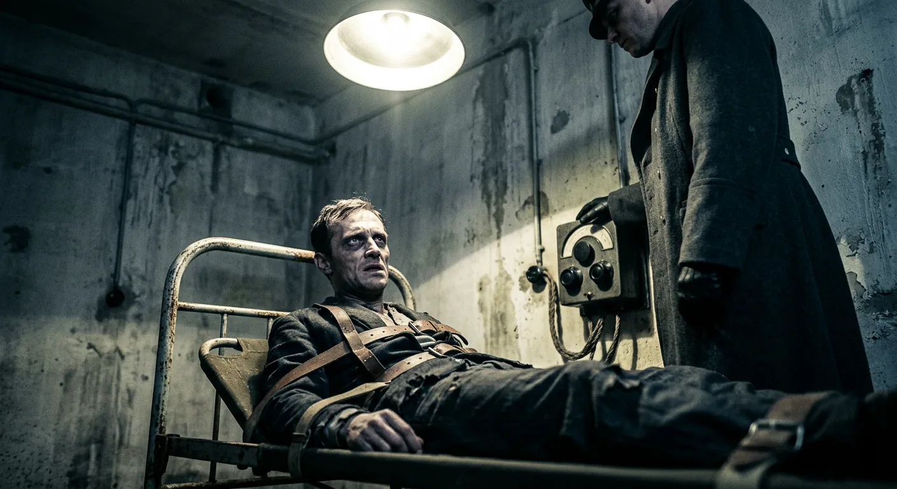
II
Winston awoke strapped to something resembling a camp bed, fixed in place, harsh light flooding his face. O'Brien stood over him, watching intently, while a man in a white coat held a hypodermic syringe at the ready. How long Winston had been in the Ministry of Love he could not say—time had dissolved into a formless underwater existence punctuated by blackouts and intervals of drugged unconsciousness.
The nightmare had begun with that first blow to the elbow. What followed was routine interrogation, though the torture was anything but routine. Five or six guards in black uniforms would work on him simultaneously—fists, truncheons, steel rods, boots. He rolled about the floor like an animal, writhing to dodge kicks that found his ribs, his belly, his groin, the base of his spine. Sometimes he screamed for mercy before the beating even started. Sometimes he resolved to confess nothing, bargaining with himself: three more kicks, two more kicks, then he would talk. Between sessions he was flung onto the stone floor of a cell to recuperate briefly before being dragged out and beaten again.
Eventually the physical brutality gave way to something worse. Party intellectuals replaced the ruffians—rotund little men with flashing spectacles who worked in relays for ten or twelve hours at a stretch. They slapped him, wrung his ears, refused him leave to urinate, shone blinding lights in his face. But their true weapon was endless questioning, tripping him up, twisting his words, convicting him of contradiction until he wept from shame. In the end he became simply a mouth that uttered, a hand that signed. He confessed to assassination, espionage, sabotage, religious belief, sexual perversion—even to murdering his wife, though she was still alive. It was easier to confess everything and implicate everybody.
Now O'Brien revealed his purpose. With a dial under his hand that could inflict graduated agony, he explained that Winston suffered from a defective memory, from the delusion that reality existed outside the Party's control. He produced the photograph of Jones, Aaronson, and Rutherford—the very evidence Winston had once held—then dropped it down the memory hole. It had never existed. The Party controlled all records, all memories, and therefore all truth.
O'Brien held up four fingers and asked how many Winston saw. Four, Winston answered. Pain flooded through him. Four, he insisted. The dial climbed higher. Four, five, four—anything to stop the agony. When O'Brien finally relented, Winston clung to him like a child seeking comfort from the very hand that had caused his suffering.
The Party's aim, O'Brien explained with dreamy enthusiasm, was not merely confession or punishment but cure—the complete conversion of the heretic's mind before his annihilation. Unlike the Inquisition or the old totalitarians, they would leave no martyrs, no vindication for posterity. Winston would be lifted clean from the stream of history, his very existence erased.
Then came a blinding flash, something clamping against Winston's temples, and a patch of emptiness opened in his mind. For one fleeting instant he saw five fingers where there were four, believed every suggestion O'Brien made, felt the luminous certainty of absolute obedience. The moment faded, but he remembered it had been possible.
O'Brien permitted questions. Julia had betrayed him immediately, completely—a textbook conversion. Big Brother existed because the Party existed. The Brotherhood's existence would remain forever unknown. And Room 101? O'Brien's expression did not change: everyone knew what was in Room 101.
A needle slid into Winston's arm, and as consciousness dissolved into drugged sleep, the true horror of his situation settled over him—he had glimpsed, however briefly, the terrifying possibility of becoming what the Party demanded, and somewhere in the Ministry's depths, Room 101 waited.
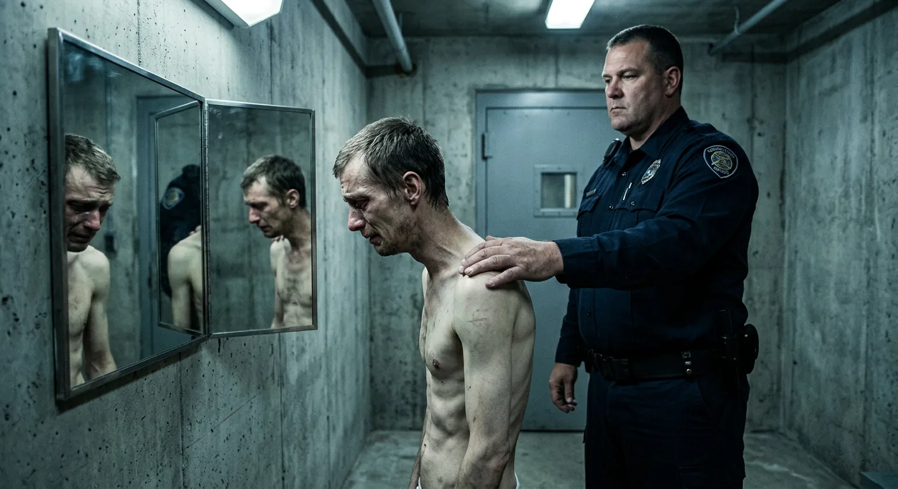
III
O'Brien announced that Winston had entered the second stage of his reintegration: understanding. The sessions had stretched across an indefinite span—weeks perhaps—and Winston's bonds had loosened somewhat, though he remained strapped to the bed. The dial still loomed beside him, that instrument of calculated agony, though he had learned to evade its worst effects through quick-witted compliance.
O'Brien revealed the truth Winston had half-suspected: he himself had collaborated in writing Goldstein's book. The description within its pages was accurate enough, but the program—the gradual enlightenment, the proletarian rebellion—was nonsense. The proles would never revolt. The Party's rule was forever, and Winston must make that the starting point of all his thoughts.
When O'Brien demanded to know why the Party sought power, Winston offered what he imagined would be the approved answer: that the Party ruled for the good of the weak, sacrificing its own happiness as eternal guardians of humanity. A bolt of pain silenced him. He had been stupid. The truth, O'Brien explained with something like pride, was simpler and more terrible. The Party sought power entirely for its own sake. Pure power. The German Nazis and Russian Communists had been cowards and hypocrites, pretending their tyranny served some future paradise. The Party harbored no such delusions. The object of persecution was persecution. The object of torture was torture. The object of power was power.
Winston observed the weariness carved into O'Brien's brutal, intelligent face—the pouched eyes, the sagging cheekbones—yet O'Brien dismissed his own decay as irrelevant. The individual was merely a cell; its weariness fed the organism's vigor. God was power, and power was collective. Freedom was slavery, the slogan ran, but it was reversible: slavery was freedom. Only through complete submission to the Party could a man become immortal.
Their exchange turned to reality itself. O'Brien claimed the Party controlled matter through controlling the mind. Stars were bits of fire a few kilometers distant, the earth the center of the universe—or not, depending on what was required. Doublethink made all contradictions possible. Winston protested, invoking fossils, the vast age of the cosmos, but O'Brien battered each objection aside. Before man there was nothing; outside man there was nothing.
The true power, O'Brien insisted, was power over human beings—over their bodies and above all their minds. Power meant making others suffer. Obedience alone was insufficient; only pain confirmed that a man obeyed another's will rather than his own. He painted the future the Party was constructing: a world without love, loyalty, laughter, or art—only fear, hatred, and the ceaseless intoxication of domination. If Winston wanted a picture of that future, he should imagine a boot stamping on a human face, forever.
Winston protested feebly that such a civilization could not endure, that life itself would defeat it. O'Brien dismissed him. The Party created human nature; humanity was the Party. When Winston invoked the spirit of Man, O'Brien played back a recording of Winston's own voice pledging to commit any atrocity for the Brotherhood. Then he ordered Winston to rise and strip.
Before a three-sided mirror, Winston confronted his own ruin—a gray, skeletal thing caked in filth, ribs protruding, spine curved grotesquely, teeth falling from his head. O'Brien wrenched out a loose tooth and tossed it aside. This, he declared, was the last man, the guardian of the human spirit. Winston collapsed weeping, overcome by pity for his own destroyed body. O'Brien laid a hand on his shoulder almost kindly, insisting that Winston had reduced himself to this state the moment he set himself against the Party.
Yet when O'Brien catalogued every degradation Winston had suffered, Winston found one thing he could still claim: he had not betrayed Julia. He had told them everything, yes, but he had not stopped loving her. O'Brien, ever perceptive, acknowledged this was true. Winston asked how soon they would shoot him. It might be a long time, O'Brien replied; Winston was a difficult case. But everyone was cured sooner or later—and in the end, they would shoot him.
That single unbetrayed love now stood as Winston's last fragile possession, though what the Party intended to do with it remained, for the moment, unspoken.
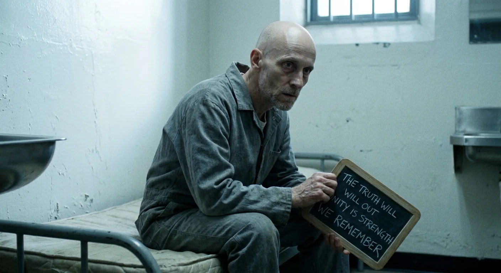
IV
Winston was improving. His body grew stronger with each passing meal—for meals were now the only reliable measure of time in the unchanging white light of his cell. The accommodations had softened somewhat: a pillow, a mattress, warm water for washing. They had pulled what remained of his teeth and fitted him with dentures, dressed his ulcer with ointment, clothed him in clean overalls. These small mercies accumulated like evidence of some transaction already completed.
For weeks, perhaps months, he drifted in torpor. The stimulus of pain removed, his mind could no longer rouse itself to effort. He slept often, and his dreams were gentle things—visions of the Golden Country, of sitting in golden ruins with his mother, with Julia, with O'Brien, speaking of nothing in particular beneath an impossible sun. Waking thoughts served only to recall these dreams. He desired nothing more than stillness, warmth, cleanliness, solitude.
Gradually, strength returned to his wasted limbs. He began pacing the cell, measuring kilometers in the narrow space, attempting exercises that revealed the full extent of his ruin. He could not hold a stool at arm's length, could not stand on one leg, could barely lift himself from the floor. Yet day by day—meal by meal—his body answered him again. He grew almost proud of it, this recovering vessel, though touching his bald scalp recalled the seamed face he had glimpsed in the mirror.
With physical recovery came mental activity, and with mental activity came the work he knew awaited him. He took up the slate and pencil they had provided and set himself deliberately to the task of re-education. He had capitulated—this was agreed, had been inevitable from the moment the iron voice commanded him and Julia to stand still. The Party had watched him for seven years like a beetle under glass. Every act, every word, every train of thought had been observed and recorded. There was no fighting such power. More than that: the Party was right. How could the immortal collective brain err? Sanity was statistical.
He wrote the slogans in large capitals: FREEDOM IS SLAVERY. TWO AND TWO MAKE FIVE. But when he reached for the third truth, his mind balked—GOD IS POWER came only through conscious reasoning, not instinct. He practiced crimestop, training himself to develop blind spots, to reject forbidden conclusions before they fully formed. It required a strange athleticism of intellect—the delicate application of logic combined with deliberate stupidity. Both were equally necessary, equally difficult.
All the while, he waited for the bullet. The tradition was unspoken but known: they would shoot him from behind, without warning, as he walked some corridor. He fell once into blissful reverie, imagining that final walk, his body strong, sunlight on his face, the Golden Country spreading before him—and then cried aloud in his sleep: *Julia! Julia, my love!*
The cry betrayed him. He had surrendered his mind but kept his heart inviolate, and now that secret hatred stood exposed. He understood what was required: he must not only think right but feel right, dream right. His hatred must become a cyst, sealed away until that final moment when the bullet came—then it would blaze forth, unpunished, unrepented, free.
But even as he contemplated this last defiance, the boots sounded in the corridor. O'Brien entered and studied him with knowing eyes.
"You have had thoughts of deceiving me," O'Brien said. "You are improving intellectually. It is only emotionally that you have failed to make progress." He paused. "Tell me, Winston—what are your true feelings toward Big Brother?"
"I hate him."
"Good. Then the time has come for you to take the last step. You must love Big Brother. It is not enough to obey him; you must love him."
O'Brien released him with a small push toward the waiting guards and spoke two words that erased whatever fragile hope remained: "Room 101."
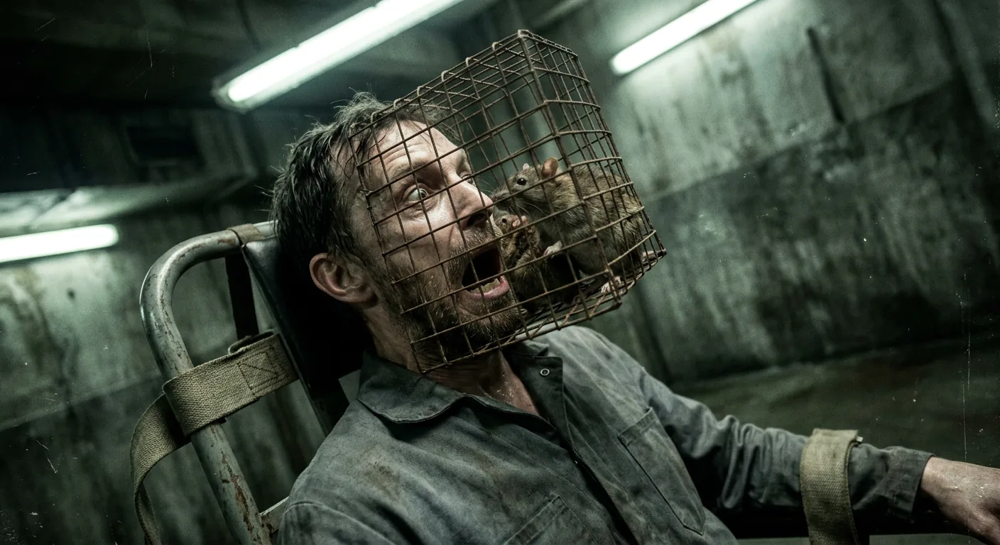
V
Winston had learned to sense his location within the Ministry of Love by subtle differences—the pressure of the air, the depth of the descent. This place lay many meters underground, deeper than anywhere he had been before, as though the Party had buried him at the earth's very core. He barely registered the room itself: only two green baize-covered tables, one near, one far, and the chair that held him immobile, a pad clamped against his skull so that he could not look away.
O'Brien entered with the calm of a man keeping an appointment. He reminded Winston of an old question—what was in Room 101?—and supplied the answer Winston already knew. Room 101 contained the worst thing in the world, and the worst thing in the world was different for every human being. For some it was fire, for others drowning, burial alive, impalement. For some it was something trivial, even absurd. For Winston, it was rats.
A guard carried in an oblong wire cage fitted with a curious masklike attachment at one end. Through the bars Winston could see two enormous rats, their muzzles blunt with age, their fur coarse and brown. A premonitory tremor ran through him before understanding arrived, and when it did his bowels turned to water. He knew, with the certainty of nightmare made flesh, what the mask was for.
O'Brien spoke in his patient, schoolmasterish way, explaining what Winston already understood: that pain alone was not always sufficient to break a man. Some would endure agony to the point of death. But everyone possessed something unendurable, a pressure that bypassed courage and cowardice alike, an instinct that could not be disobeyed. The rats were Winston's instinct. He would do what was required.
Winston begged to know what was wanted of him, but O'Brien only moved the cage closer, describing how the starving creatures would shoot out like bullets, how they sometimes bored through cheeks to devour the tongue, sometimes attacked the eyes first. The foul smell struck Winston's nostrils; nausea convulsed him. For an instant he became a screaming animal, blind and mindless with panic. Yet out of that blackness emerged a single desperate idea: he must interpose another body between himself and the rats.
The mask pressed closer. The wire brushed his cheek. And then understanding crystallized into words, torn from him in frantic, repeated shouts: *Do it to Julia! Do it to Julia! Not me! Tear her face off, strip her to the bones—not me!*
He felt himself falling backward through infinite depths, plummeting away from the rats, through floor and walls and earth and ocean and atmosphere and into the black gulfs between the stars. O'Brien remained at his side, the cold wire still touching his face. And through the darkness Winston heard a metallic click—the cage door snapping shut, not open.
The worst thing in the world had done its work, and somewhere in that final betrayal the last unconquered corner of Winston's soul had surrendered, leaving behind only the hollow shell the Party required.
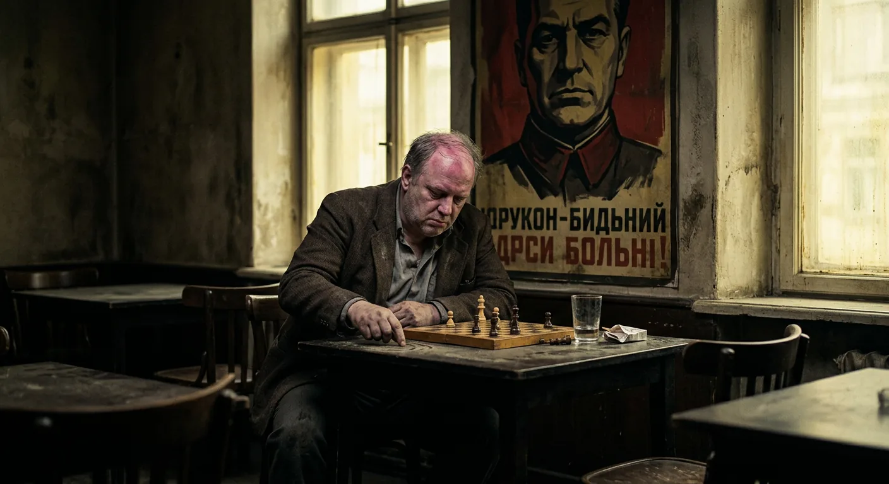
VI
Winston sat in his usual corner of the Chestnut Tree Café, a place of dusty tabletops and thin yellow light, where the telescreens trickled their tinny music and the vast face of Big Brother gazed down from the opposite wall with patient, unblinking authority. The waiters knew his habits now—the chessboard always waiting, the corner table perpetually reserved, the Victory Gin flowing unbidden into his glass. Nobody cared to sit too close to him, though it hardly mattered anymore. He had money, a sinecure at the Ministry of Truth involving the placement of commas in brackets, and all the gin he could drink. The stuff was horrible, clove-sweetened and oily, but it had become the element he swam in—his morning resurrection, his nightly oblivion, the medium through which his days dissolved one into the next.
He had grown fatter since his release, his features thickened, his scalp too pink, and his mind could no longer hold any subject for more than a few moments at a time. News from the African front troubled him vaguely; Eurasian armies were pressing southward toward the Congo, and for the first time Oceania itself seemed threatened. He studied the chess problem laid before him—white to play and mate in two moves—and thought, with a sort of cloudy mysticism, that white always mates. It was so arranged. In no chess problem since the beginning of the world had black ever won.
A memory surfaced, unbidden: a chance meeting with Julia in a bitter March park, among dead grass and crocuses dismembered by the wind. She had changed—sallower, scarred, her body thickened and stiffened like a corpse he had once dragged from rubble. They had not kissed, barely spoken. "I betrayed you," she said, and he answered in kind. They acknowledged what Room 101 had made of them: at the moment of terror, each had meant it, had wished the other delivered to the horror rather than themselves. Something had been killed in the breast, burnt out, cauterized. They parted without warmth, and Winston found himself walking not after her but back toward the café, back toward the warmth and the gin and the chessboard.
Now, tracing "2 + 2 = 5" absently in the dust, he waited for the bulletin. When the trumpet call finally came, it announced victory—a vast seaborne armada, a sudden blow in the enemy's rear, half a million prisoners, complete demoralization. The café erupted; even the waiters pricked up their ears. Winston's feet made convulsive movements beneath the table, though he did not stir from his seat. In his mind he was running, cheering himself deaf with the crowds outside.
And then, sitting in blissful stillness as the gin glass was refilled, he understood at last. Forty years it had taken him to learn what kind of smile was hidden beneath that dark mustache. The struggle was finished. He had won the victory over himself.
He loved Big Brother.
---
*What follows is not story but doctrine—an appendix outlining the principles of Newspeak, the Party's ultimate instrument for making heretical thought not merely dangerous but literally unthinkable.*